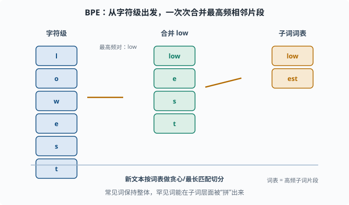
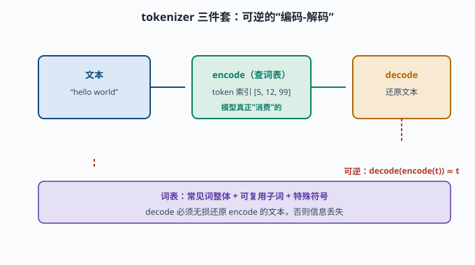

子词分词：文本如何变成模型认识的 token
目标：理解为什么"切开成词"不够、为什么子词分词成了标准。读完这一页，你能讲清 BPE、WordPiece 的原理，并知道 tokenizer 的"词表 + 编码 + 解码"三件套。
为什么不能简单"按空格切词"
最直觉的分词是按空格和标点切成词。但真实语言和应用场景都很不配合：
- 词表失控：新词、人名、地名、专业术语层出不穷，词表永远不够用。
- 罕见词丢信息："embeddingization"这种生造词，要么进不了词表，要么让它变成稀有的孤儿。
- 词形变化爆炸：英文的 run/runs/ran/running 都是独立词，浪费大量词表位置，还损失了词干之间的联系。
- 多语言/无空格语言：中文没有一个自然的空格分隔，"按空格切词"直接失效。
- 拼写错误：一错就变成"没见过的词"。
能不能既保留词的语义、又不被词表困死？子词（subword）分词正是为这个矛盾而生。
核心思想：把词拆成"子词单元"
子词分词介于"按字符"和"按整词"之间：
按字符： flexibility → f-l-e-x-i-b-i-l-i-t-y（太多碎片，语义丢失）
按整词： flexibility → [flexibility]（词表爆炸）
子词： flexibility → [flexib, ility]（平衡）
理想的字典既包含高频词（作为整体），又把低频罕见词拆成可复用的子词片段。这样：
- 常见词保持整体，语义不碎。
- 罕见词能在子词层面被"拼"出来，不受词表限制。
- 相似词共享相同子词（如"un-""-able"），词形联系的显性保留。
BPE：Byte Pair Encoding
**BPE（字节对编码）**是最常用的子词算法，直觉是"贪心合并最高频的相邻片段"。
具体步骤：
- 从字符级开始：把每个词拆成单个字符（并标注词尾）。
- 统计语料里所有"相邻两片"（字节对）的出现频率。
- 每次把出现最频繁的相邻对合并成一个新片段，加入词表。
- 重复第 2-3 步，直到词表达到目标大小。
例子（简化）：
语料里 "low" "lowest" "newer" "newest"
先合并最频的 "low" → 词表多一个子词
再合并 "lowest" → "low","est"
...
最终词表里自然出现 "low","est","new","er" 等可复用子词
训练的产物是一个词表（一组子词片段）和一个合并规则表。编码新文本时，就按"最长/贪心匹配"把它们切成词表里的子词。

上图演示 BPE 的三步：最左边是"字符级"起点，每个词都被拆成单个字符 l o w e s t；中间靠"出现频率最高"的相邻对 low 先被合并，形成 low + e s t；最右边逐步合并出 low、est 这类可复用子词，组成最终词表。核心启发是：高频片段快速成词、低频罕见词在子词层面被"拼出来"，从而既控制词表规模又保留词形联系。
WordPiece：BPE 的一种"变体"
WordPiece（BERT 用）和 BPE 类似，都是"从字符起、逐步合并"，但选合并对的准则不同：
- BPE：合并出现频率最高的相邻对。
- WordPiece：合并能使训练数据似然提升最大的相邻对（按语言模型的概率增益选）。
实际效果相近，记号上 WordPiece 产出用 ## 前缀标记词中续接的子词（如 flexi##bili##ty）。GPT 系列通常用 BPE，BERT 用 WordPiece——你知道这个区别看论文时就顺了。
训练好的 tokenizer 是"三件套"
一个可用的 tokenizer 包含三部分：
1. 词表（vocab）：所有 token（子词片段 + 特殊符号）
2. encode（编码）：把文本 → 一串 token 索引
3. decode（解码）：把 token 索引 → 文本
编码时，把文本按词表做最大匹配切分；切不开的罕见字符会落到"未知 token"或退到 byte 级。解码则要能无损还原（concat 子词并消除 ##/空格约定）。
注意：decode 必须能完美还原 encode 的文本（可逆），否则信息就丢了。但"可逆"不等于"和原串一个字符不差的可读性"——分词常引入的微小空格约定（如英文词的词首空格）就是为了能正确还原。

上图把三件套画成一条可逆的流水线：左侧文本先经 encode（查词表）变成一串 token 索引，这是模型真正"消费"的原子单位；之后 decode 再把索引还原成文本。红色回环强调可逆性：decode(encode(文本)) 应当约等于原文，否则编码和解码之间就会静默丢信息。一个可用的 tokenizer 底座就是"词表 + encode + decode"这三件套的完整闭环。
词表里还有哪些"特殊 token"
真实 tokenizer 的词表除了子词，还塞了一堆特殊符号：
[UNK] 未知 token（词表外）
[CLS] 分类标记（BERT，句首）
[SEP] 句子分隔（BERT，两段之间）
PAD 填充到等长
EOS / BOS 结束/开始标记（生成模型用）
这些符号看似无关紧要，实则是模型与任务约定的一部分。你之后在 07 章和 deepseek-harness 的 prompt 流程里会一直撞见它们。

上图把一段带特殊 token 的序列摊开：<BOS> 标开始、正文 token 居中、<SEP> 隔开不同的句子或段落、<EOS> 标结束、末尾用 <PAD> 填充到等长。它们不表达语义，而是给模型"这一段是什么"的约定：对话场景则用 <|im_start|> / <|im_end|> 区分用户、助手和系统。别小看这些符号，它们是理解预训练与 prompt 编排的暗号。
用 HuggingFace tokenizer 感受一下
from transformers import AutoTokenizer
tok = AutoTokenizer.from_pretrained("bert-base-uncased")
texts = ["Don't take this lightly", "deeplearningisawesome"]
for t in texts:
ids = tok.encode(t)
print(repr(t), "->", ids, "->", tok.decode(ids))
运行会看到英文文本被切成一串子词 token 索引，decode 又能拼回一句近似原文的话。这演示了"编码-解码"可逆三件套。
为什么分词影响一切
分词看似"预处理小技巧"，实则悄悄决定了很多大问题：
词表大小 → 决定输入/输出维度（softmax 头部可大可小）
分词粒度 → 决定模型"看"到多细的语言单位
token 数 → 决定上下文长度能容纳多少内容、成本多高
你会发现后面 06、07 里"上下文窗口算多少个 token""API 按 token 计费"这些话题，全都是从这里长出来的。
思考题
- 试举两个"按空格切词"会失败的真实场景。
- 子词分词的"平衡"是什么意思？它比字符级好在哪、又比整词级好在哪？
- BPE 从头到尾的贪心策略是什么？它最终产出什么？
- WordPiece 与 BPE 选择"下一个要合并的相邻对"的准则有何不同？
- 为什么 decode 必须可逆？编码成 token 索引后为什么还需要 decode？
参考答案
- 中文（没有天然空格分隔）和生造/罕见英文词（如自定义术语或拼写错误）都无法靠空格切词正确处理；多语言差异也使单靠空格不可靠。
- 在"字符级太碎、语义丢"和"整词级词表爆炸"之间取中：常见词保整体，罕见词拆成可复用子词。既控制词表规模，又保留大部分语义与词形联系。
- BPE 从字符级出发，反复合并"当前出现频率最高的相邻字节对"进词表，直到词表达到目标大小。产物是一份子词词表 + 合并规则，可对新文本做贪心切分。
- BPE 选"出现频率最高"的相邻对合并；WordPiece 选"使训练语料语言模型似然提升最大"的对合并。二者都是自底向上贪心，但打分准则不同。
- 因为 decode 承担把 token 索引还原成可读文本的职责，若不可逆，训练/推理时的文本前后就对不上，信息会被静默丢弃。可逆保证"编码-解码"不损失原文，是可靠 NLP 管线的前提。
下一步
- 想看"任意序列到任意序列"的模型框架 → 05-04 Seq2Seq。
- 想知道模型如何"关注"重点而非记住全部 → 05-05 注意力机制。
- 想对比 BPE/WordPiece 在预训练模型里的实际差异 → 05-08 预训练范式。